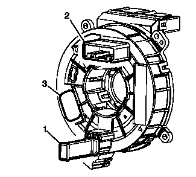
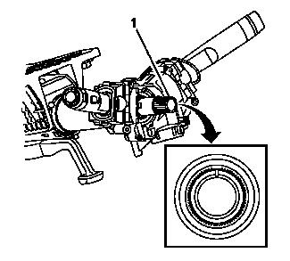

安全气囊方向盘模块线圈的对中
注意:
如果将双线箍带安装至线束总成和转向柱，则在安装时必须使用原始的线束箍带固定夹。
1.
必要时拆下线束箍带。

告诫：
新安装的辅助充气式约束系统线圈总成需要对中。若定位不当，辅助充气式约束系统线圈总成可能损坏设备，导致充气式约束系统故障。
2.
检查充气式约束系统方向盘模块线圈。如果存在黄色锁销 (1)、向上指针 (2) 指向 12:00 点钟位置且在中心窗 (3) 中可看到回路，则线圈已处于中心位置且无需再操作。

3.
如果线圈需要置中，则执行以下主要步骤：
•
车轮保持在正前位置。
•
转向轴的挡块齿 (1) 位于 12 点钟位置。
•
点火开关置于“LOCK（锁定）”位置。
4.
要置中线圈，执行以下步骤：
•
保持安全气囊系统线圈朝上。
•
顺时针方向缓慢旋转线圈毂，直到线圈带停止。
•
逆时针缓慢旋转线圈毂约 2.5 圈，直至向上指针 (2) 处于 12:00 点钟位置。
•
观察中心窗 (3) 并确保可以看到回路。如果回路可见，则线圈处于中心位置。
•
将线圈毂固定至中心位置时，将线圈和转向柱部件对准，然后滑至转向轴。
5.
如果将双线束箍带安装至线束总成和转向柱，必须沿着转向柱向上布线。一条线束箍带环绕一根引线从线圈到达转向柱。另一条线束箍带环绕所有其他引线到达转向柱。